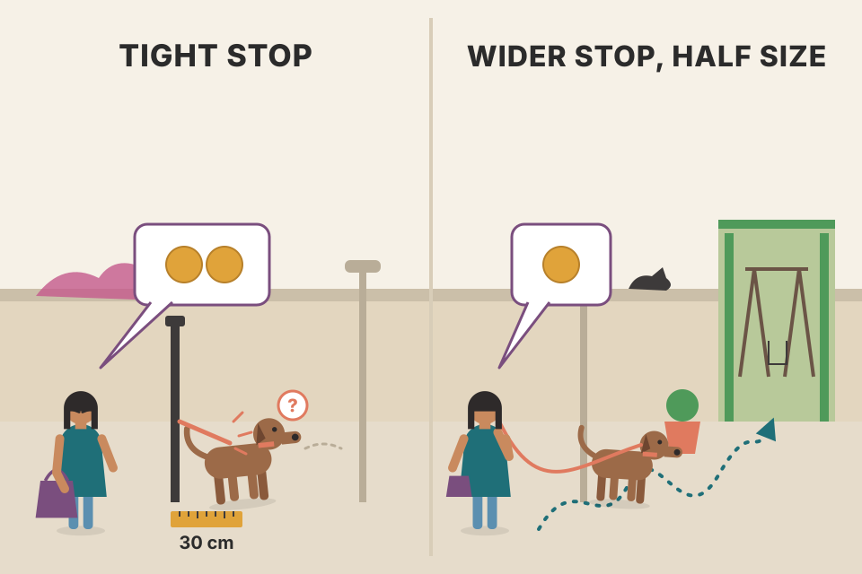
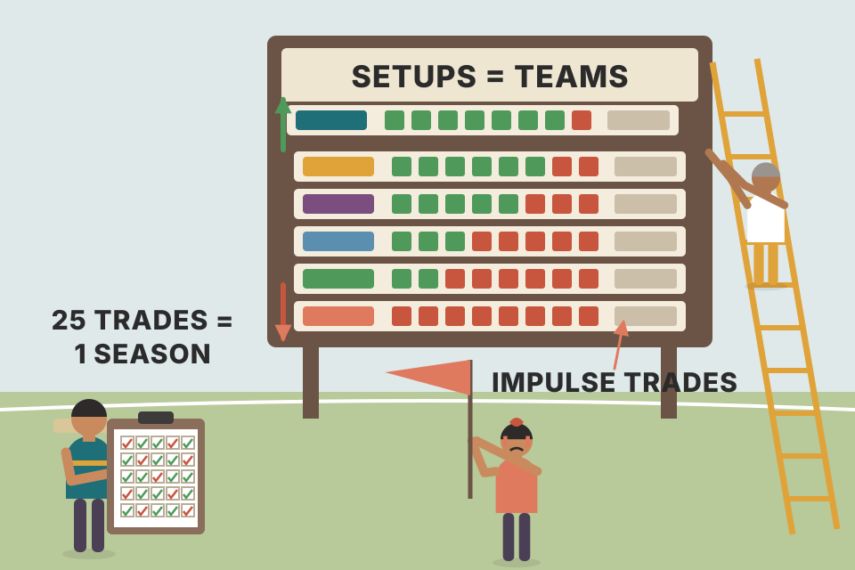
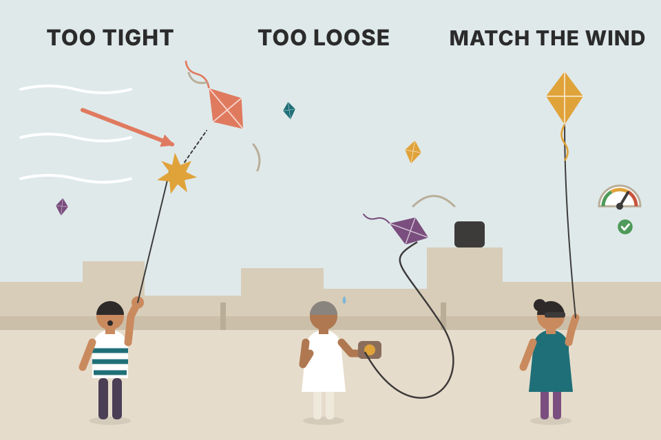
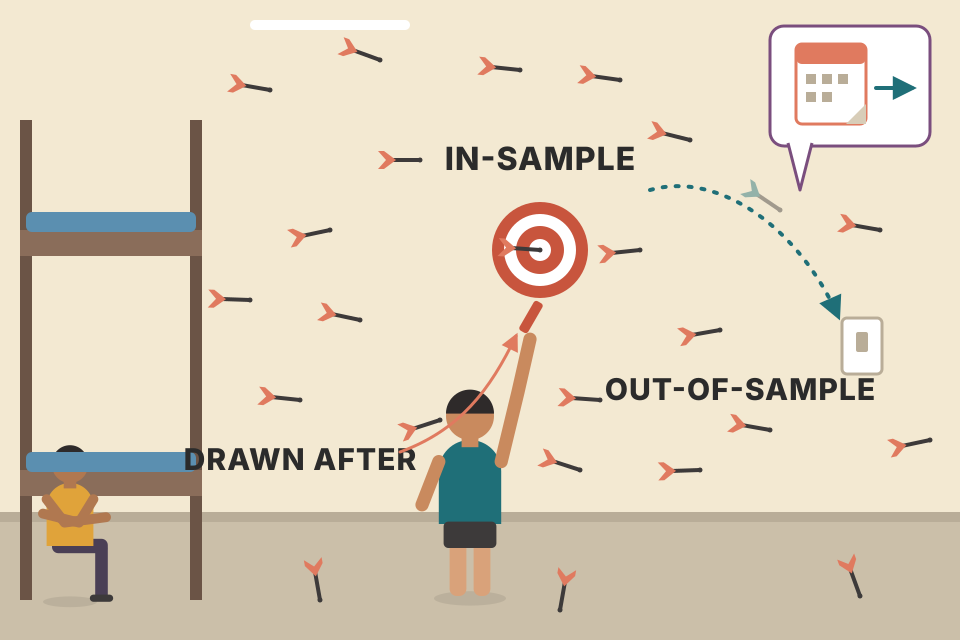

Carter's chapter on why smart, hard-working people lose money in markets, told mostly through his own blow-ups and the traders he has coached. Every idea from the chapter is below, in the book's order, in plain words. Where the book gives numbers, there's a worked example that checks them. Where it makes a claim about behaviour, there's a simulation you can play with. All prices and trade results on this page are simulated (or drawn by hand from the book's own numbers), and they show a mechanism. They aren't evidence about real markets.
Carter's argument runs in one line: markets make their biggest moves when enough people are trapped on the wrong side, so the trader's own emotions are the raw material other traders profit from. The chapter shows the traps, the stages traders pass through, and the habits that get you out.
The chapter opens with two proverbs: don't test the depth of the water with both feet, and respect your limits because they won't respect you. Then Carter calls trading the most deceptive job there is. Nobody walks onto a passenger jet and flies it with no training, yet people open a brokerage account and start trading with no guidance at all. From the first minute, their emotions and the normal workings of their brain are working against them.
His core claim: markets are built to feed on human nature. They move sharply only when enough people are trapped on the wrong side. Those trapped traders then dump in fear, frustration and rage, and that burst is the opportunity for the trader who prepared. The chapter lays the groundwork for every setup later in the book by showing how to control the "inner demon": the thing that stops you following a setup's rules once you're in the trade. He links it to the brain freeze in the river-rafting story (Introduction) and to Joe Trader's TASR trade (Chapter 1).

A dog on a lead walks in a wobbly line. If you tie the dog to a post with a 30 cm lead (a tight stop), every sniff to the side yanks it back, and you'd conclude the dog "failed to walk". Give it a 2 m lead and it reaches the park. Halving the size is how you afford the longer lead without risking more money.
The model (not in the book): price wanders like a random walk with 1 point of noise per bar, and the target is set by the setup, so it doesn't move. The size is chosen so a stop-out always costs $1,000 (E-mini S&P = $50 a point, a contract spec, not from the book), and each contract costs $15 round trip. A wider stop makes the target likelier to be hit first (top curve), which is exactly Carter's claim that this fixes the win rate. But look at the expected dollars underneath. With no drift, the higher win rate is paid for by bigger losses and the expectancy is zero before costs. What actually improves is costs (fewer contracts for the same risk) and, if the market really has an edge, the wider stop gives that edge time to show up (tick the drift box). A higher win rate on its own is not an edge.
Notes/trading/backtest_results_summary.md uses the break-even win rate p* = (L + c)/(W + L). That's the honest way to judge a win rate: compare it with p*, never on its own.An old Las Vegas saying: a man with a system is always welcome. Having a system feels safe. Carter points out that the giant resorts were paid for by people who thought they could beat blackjack. The owners of the Luxor borrowed $550 million over 20 years and paid it off in under three years. Tell the front desk you have a system and you may get a suite and a private table.
Systems fail in Vegas for two reasons: the house has a percentage edge, and after a couple of losses the human starts tweaking the system until it falls apart. One stupid bet can wipe out the whole bankroll. That's why casinos sell strategy books in their own gift shops: the fox guarding the henhouse.
Craps is his case study. The table layout pulls players away from the higher-probability pass and don't-pass bets toward exciting, low-probability bets like the "hard ways" as the night goes on. It's crowd behaviour in front of you, and the house wins, which is why the drinks are free. Markets are the same: the market's edge is that it has no emotions. Like a river heading to the sea, it ignores what the people riding it want. Trying to impose your will on it is like yelling at a tornado to change course.
Four tables. At each one, 400 gamblers start with 100 chips and bet 1 chip at a time. The only difference is which bet they choose. Watch the crowd's middle (the line) and the spread (the band) drift down, slowly at the pass line and fast at the "fun" bets.
Pass line wins 244 of 495 resolved bets, pays 1 to 1: house edge 1.41%. Hard 6/8 wins 1 time in 11, pays 9 to 1: edge 9.09%. Hard 4/10 wins 1 in 9, pays 7 to 1: edge 11.1%. Any seven wins 1 in 6, pays 4 to 1: edge 16.7%. These are standard casino numbers, not Carter's. Each bet in the simulation is one resolved bet.
A bet with a negative edge loses a fixed fraction of the money wagered, on average, no matter how the bets are arranged. Doubling, skipping, "only betting after three sevens": none of it changes the sign. Tweaking a system after losses is rearranging those bets. In markets the "house edge" is costs plus the professionals on the other side, so a system has to beat both, and a trader who keeps changing it never finds out whether it does.
Two epigraphs set the tone: an Ethiopian proverb (you can't cure a disease you hide) and Og Mandino (don't let yesterday's success make you complacent today). The order matters: understand the psychology first, then learn the setup. New traders want only the setup. After the market beats them up, the ones with money and nerve left come back to the psychology. Carter calls them two puzzle pieces that must click together before you can trade for a living without repeating the same mistakes.
He has shown many traders setups that work, and the ones who skip the psychology always ruin them eventually. Not every trade goes wrong. One downward spiral is enough, and it usually starts the first time they get three losers in a row. Then the thought arrives: add a MACD filter, change the moving average, and I wouldn't have been stopped out. A good setup dies early and the trader starts the endless tweak, hunting a magic potion that doesn't exist.
Carter's credentials here: years of working on his own psychology, hundreds of traders in person and thousands online and in webinars, and time in big trading rooms with hedge funds and prop traders. He has watched fear, elation and greed spread through a room like a disease, and watched money flow from accounts on one side of a room to the other as the groups traded different setups and rules. He says he isn't a psychiatrist, but he has a clear map of what most new traders go through. When money is involved, people's differences vanish: doctor, lawyer, surfer or engineer, a herd of thirsty cattle all stampede to the water.
Flip a coin that lands heads 55% of the time. Three tails in a row feels like proof the coin is broken. It isn't. It's what a 55% coin does, many times, in any long run.
The curve is exact, not simulated. It tracks "how many losses in a row am I on right now?" trade by trade and adds up the probability of reaching the streak length. At a 55% win rate, three losers in a row show up somewhere in 25 trades about three times out of four (77%), and are almost certain (99.8%) over 100 trades. So the trigger Carter describes is a normal event, and changing the system because of it is reacting to noise. It's also why he later judges setups in blocks of 25 trades (section 06).
Notes/trading/backtest_results_summary.md tried 8 variants per timeframe and none was worth trading. Changing settings didn't create an edge there either.Carter adds that he learned most of this from the market's best teacher: his own pain. By his last year of high school he had saved $1,000 from a $4-an-hour job serving cookie dough and sodas at the mall, plus a tiny mail-order business buying rolls of wheat pennies in bulk and selling them one at a time through newspaper ads. His stepfather Lance, a Morgan Stanley broker who met friends every Sunday night to plan Monday's trades, asked if he'd thought about putting his capital to work.
When they planned to buy Intel call options and asked if he wanted in, he said yes without knowing what a call was. He spent the whole $1,000 on 10 Intel calls at $1. Four days later Lance said sell, and he sold at $1.80: an 80% profit of $800 before commissions. He never went back to the cookie job, which paid $32 a day before tax.
For the next eight years, through college and his first corporate job, he would stake himself with $10,000, trade low-priced stocks and options, and grow it to the $120,000–$130,000 range. Each time he did one smart thing and one stupid thing. The smart thing: once the account passed six figures, he withdrew $20,000–$30,000 of profit to buy single-family homes and duplexes to rent out. The stupid thing is the next section.
An 80% gain in four days on a whole account is how options reward a beginner, and it plants the idea that big, all-in bets are normal. The same arithmetic (×100 per contract) is what makes the house trade in the next section move so fast in both directions.
The stupid thing: after turning $10,000 into a little over $100,000, he'd decide to turn the remaining $100,000 into $1,000,000. The first try took six weeks to grind $100,000 back down to around $10,000. He called it bad luck and rebuilt. About a year later he was just over six figures again, took money out for real estate, and tried the million again. This time it lasted four months, with the same result: back to $10,000 and change.
A few years after college, engaged, he'd rebuilt to a $150,000 account and switched to trading for income, taking modest profits out each month and getting closer to quitting his job as a financial analyst. A promotion moved the couple from Austin to Minneapolis in the mid-1990s, through two of the city's coldest winters: wind chill of 40 below, cars that wouldn't start. His fiancée, who had never seen snow, gave an ultimatum: get a house with a garage so the cars will start. By May they found one with a heated garage, and he planned to put $30,000 down.
A week before closing he didn't want his comfortable $150,000 account to drop to $120,000. (Most of his withdrawals had gone into rare coins, so the account was his only liquid money.) So he planned one big trade to earn the $30,000: one of his normal setups, just much bigger, watched like a hawk. The OEX (S&P 100 index options) was pushing against a major downtrend line on the daily chart. Step through what happened.
He sold the day before closing without even looking at the price, then maxed out his credit cards for the $30,000. At the closing the mortgage officer asked why the money wasn't coming from the investment account; he played dumb, and after an hour they closed. He didn't tell his fiancée. He went to a par-3 golf course and threw up on five holes. Then he asked himself what he wanted. He could sell a property for a new stake, but he loved analysing markets and managing trades, both an intellectual and an emotional challenge, so he stopped trading for a year to work out why he could make money but not keep it. He studied, read and talked to successful traders, and found Mark Douglas's The Disciplined Trader (turning stressful situations into normal trading behaviour) and its follow-up Trading in the Zone, now required reading for anyone he works with.
Every ruinous habit in the chapter is in this one trade: a money goal instead of a setup ("make $30k by Friday"), all-in size, averaging down at $7, no stop because it "had to work", holding a green position overnight, then freezing when the planned exit never came. Notice the irony on the chart: he refused to let the account fall to $120,000 and it fell to $8,000.
Douglas's books and the year off gave Carter his answer: when he focused on the setups, he did fine; when he focused on the results, he got killed. A big account made him think "turn this into a million" or "just make a quick 30 grand". That goal pushed him into the habits that ruin traders: betting everything on one trade, skipping the stop because the trade had to work, and chasing a number instead of waiting for a high-probability setup. He takes responsibility rather than blaming his upbringing, and adds that a trader focused on "making money" sees opportunity where there is none. He then changed two things:

A league table. Each setup is a team; each block of 25 trades is a season. You keep the teams that win and relegate the ones that lose. Impulse trades are the team you secretly love that never wins.
Each simulated setup wins +2R or loses −1R. Their true average results per trade are fixed and hidden: A +0.25R, B +0.10R, C 0R, D −0.10R, impulse −0.15R (my made-up numbers). The table under the chart gives the exact binomial chance that a single 25-trade block shows a loss even though the setup's true average is what it is. A genuinely good setup can lose a block quite often, so dropping every setup that lost money this month will sometimes drop a good one. Judging over several blocks (the "after 4 blocks" column) makes the ranking much more reliable. Carter's discipline of trading each setup identically is what makes this measurement possible at all.
Notes/trading/using_equations_to_trade.md (stop a strategy if live drawdown passes 1.5–2× the backtested drawdown) is a more formal version of "dump the setups that lose".Carter sees impulse trading as one of the most common ways traders get hurt. There's no plan: go long when it feels right, short when it feels right, or trade out of boredom. Traders who came to his office specifically to fix this would still sneak in orders when he wasn't looking. The urge to be part of the action works like a drug addiction, and like most addictions it doesn't work long-term.
His method: sit next to them and do the exact opposite of every trade they make, then compare P&L at the end of the day or week. They learn that someone is making money doing the opposite of them, and the exercise is mostly profitable for Carter. The cure is patience (learning which setups suit you, then waiting for them) and integrity (section 13). Impulse traders who can't admit the habit should go to Las Vegas instead: same result, but the drinks are free.
He compares it to leaving a partner who belittles your best efforts. He liked his impulse trading; it was fun and made him feel alive. But it undermined his goal of trading full time, so he "broke up" with it, with a reward-and-punishment system he says he covers in a later business-plan chapter. He stayed with his friends that believed in him: the setups that worked when given half a chance. Following them the same way every time is what let him go full time, mostly by developing a "professional state of mind". Postscript: years later he told the "Minnesota Stupid House" story at a Traders Expo in Las Vegas, forgetting his wife in the audience had never heard it. Afterwards she sweetly asked what else he hadn't told her.
Taking the other side flips the sign of the gross result, but both people pay costs. The mirror trader makes money only if the impulse trader's average gross loss is bigger than the cost of one trade. That's why Carter calls the exercise "mostly" profitable rather than always. It's also why brokers can profit by taking the other side of clients who are bleeding (section 19).
Notes/trading/trader_returns_reality.md quotes SEBI's FY23 intraday study: 71% of individual intraday traders lost money, and 80% of those making more than 500 trades a year lost.Trader psychology doesn't seem to matter until it really matters. You think it won't apply to you, or that you'll work it out before the moment of truth, and that moment arrives at the worst possible time (Carter's example involves a toddler and a car in traffic). The closer a trader gets to being consistent, the clearer it becomes that the real enemy is rarely the person on the other side of the trade. It's the person in the mirror. Most traders, Carter included, only learn this by blowing out an account. Seasoned traders call that loss the price of tuition.
After losing a fraction x, you need a gain of x ÷ (1 − x) to get back. A 20% loss needs +25%, 50% needs +100%, 90% needs +900%. Carter's $150,000 → $8,000 was a 94.7% loss; getting back would have taken +1,775%. Losses and gains aren't symmetric, which is why the whole chapter is about not taking the big loss.
The first psychological wall is addiction. People assume that means gambling. For a trader it's the rush of placing the trade and the thrill of hoping it pays big. But all that is small next to the addiction to being right, or worse, to not being wrong, which pushes behaviour into the absurd. Going deeper, Carter says any addiction (alcohol, work) numbs painful emotions we don't want to face, and we should own that.
A reasonable trade can assume the market won't crash overnight; stops and risk limits handle the rest. But early on 17 January 1995 an earthquake hit Japan and its stock market dived. One trader watched his losses grow and kept doubling and tripling his position to lower his average cost. The bounce never came. Nick Leeson walked out, leaving a note saying sorry. The trade lost $1.3 billion and bankrupted Barings Bank. Extreme, but the same thing happens daily in small accounts: if $5,000 is your whole stake, losing it can feel nearly as bad (Figure 2.2 accompanies this in the book; the image is missing from this PDF copy).
Carter recommends David R. Hawkins's Letting Go: The Pathway of Surrender; he feels lighter every time he rereads its first chapters. In most careers the need to be right is a strength: it makes you work harder and treat setbacks as lessons, like Rocky, the kind-hearted debt collector who proves everyone wrong. Try that in trading, holding a loser until it turns so you can prove you weren't wrong, and you'll get crushed. Maybe not this trade or the next, but eventually, and it ends in a blown account. Trading, he says, is the only profession that punishes tenacity by taking your money. Be tenacious about getting better, not about being right on this trade.
Each add drags the average cost (dashed line) down toward the price, so the bounce needed to break even stays small: compare the two bounce columns, with and without adding. That's the seduction. But the position grows geometrically, so the next drop costs far more than the last one. The "loss if it drops one more step" column is the one that ends careers. A falling market doesn't have to bounce, and a trader who has to be right keeps buying the thing that is proving him wrong.
Besides the need to be right there's the mind's other power: rationalization. Carter cites a scene from the film The Big Chill where Jeff Goldblum's character jokes that nobody gets through a day without a couple of juicy rationalizations, and that they matter more than sex. Rationalizing what's on your screen means rewriting the story so your position looks right. Joe Trader tells himself the trade won't go against him for long and they won't shake him out. If it works, he's a genius with a gut feeling and decides to trade bigger next time.
People do this everywhere in life (it's fine to ignore the kids if you have "very important things to do"). In trading, though, the result sits on your P&L statement. However right you persuaded yourself you were, a loss taken while proving yourself right is still a loss, and the market doesn't care about your story. The P&L is the great equalizer: it shows who you really are, often unflatteringly, which is why trading fails so many people. Flaws land on the P&L and have to be fixed in practice on every trade, not just noted in a journal. Carter's game changed when he committed to getting better on every trade instead of explaining why he was right, or riding a loser for the drama and the feeling of victory.
Sort these thoughts. Decide first, then open each one.
Story. Nothing in it is about the setup's rules; it's about not being wrong.
Plan. The exit was decided before entry and followed.
Story. A single win is used to justify breaking the size rule (see euphoria, section 22).
Plan. Graded on execution, not outcome (sections 06 and 29).
Story. The market is never wrong about price; you are just early or wrong.
Story dressed as plan, unless widening on volatility was written into the setup's rules beforehand. Rules change before the trade, never during it (section 28).
The P&L is an outside, objective record; the story is an inside, flexible one. Rationalization works by quietly swapping the measure: from "did I follow the rules?" to "can I explain this?". Anything can be explained, so the second measure can never fail, and nothing gets fixed.
Great trading is a balancing act: every trade splits you into caution and boldness. You need caution to be patient, courage to get in, confidence to stay in a winner, and caution to protect gains, but not so tightly that a wiggle stops you out. Most important is the courage to admit the trade is wrong and get out. That's why great traders are rare, and why many type A personalities do badly: plenty of boldness and decisiveness, not enough caution, patience, or willingness to accept that a setup that looked great simply didn't work. The market doesn't care whether your setup was good.
At the start of a trade there's a devil on one shoulder telling you to hang on no matter what, and an angel screaming to get out with any tiny profit or loss. A trading plan you trust works like ear protectors against that noise; trading without one is like swimming in the Amazon with raw steaks tied to your waist. Off-plan, fear takes over and you exit too early. Fear can also do the opposite: an irrational boldness that keeps you in long after the warning signs. It takes courage to stay in a trade, and at least as much to get out of one that clearly isn't working. The more nerve a trader has, the higher the chance of ruin.
Carter quotes a general's line that retreat is a legitimate tactic. A small loss that prevents a big one is a win. If it isn't going your way, protect your capital; you can always get back in for the price of a commission. Go flat, take a walk; the market isn't going anywhere. Deciding to exit "neither too early nor too late" sounds easy, but everyone's a genius in hindsight; real-time decisions without knowing the next move are what make or break you. The best traders reach a Zen-like flexibility (expensive suits quoting "no ego, no pain"): an opinion about the market is only an opinion, so leave room for chance, get out when it's wrong, and trust that the opportunity will come round again.
Once you accept that opportunity keeps renewing, there's no reason to enter on half-convictions. Wait until a setup is clearly there, not "maybe" or "almost". When it appears, your only job is to take it; whether it works is what the stop is for. Meanwhile the job is to fight boredom and stay flat. Boredom trades eat attention while good setups pass by: a big opportunity cost. Entering late and getting stopped on a normal pullback means someone else eats your lunch, because your stop becomes their planned entry. Markets never repeat the exact same mix of orders. A shuffled deck is almost certainly in an order no deck has ever been in, and markets have far more variables, so look fresh each day with no preconceptions and ask: "What is the market showing me now?"

Holding a kite on a gusty day. Grip too hard (a tight trailing stop) and a gust snaps the string; let out too much line (a loose stop) and the kite drifts far down before you react. The right grip depends on how gusty the day is.
The simulated market rises with noise and then rolls over. A trail of 1–2% sits inside the normal wiggle, so it exits on the first pullback and misses the trend: the stop-out on a small wiggle that Carter warns about. A trail of 12–15% sits outside the noise but hands back a lot at the top. In between is the caution-vs-boldness balance, and where it lies depends on how noisy the market is. Roll new numbers and the best setting moves, which is why it belongs in the setup's written rules, not in an in-the-moment decision.
A 52-card deck can be ordered in 52! ≈ 8.07 × 1067 ways. Even if every person who ever lived had shuffled a deck every second since the Big Bang, they'd have produced a vanishingly small fraction of those orders. That's the size behind Carter's point that today's shuffle is almost surely a first. Re-entry costs: in your note Notes/trading/breakeven_move_fyers.md an intraday round trip on a ₹1 lakh NSE trade needs about a 0.12% move to break even. That's the real price of getting back in, and it's small next to a big loss.
Professional gamblers aren't rattled by winning or losing streaks, and great traders learn to roll with punches because they're used to taking them. They manage money so that no single session can break them. One way to get there: stop thinking of money as money. As a teenager every hour of work became something real: petrol, a film, a dinner. Traders do the same, turning a win into a car payment or a loss into a home-theatre system. Don't. In trading, money is only a tool and a way to keep score. That detachment would be dangerous in ordinary life, but it removes emotion from the trading day. The moment you think in purchasing power again, you play less skilfully and more emotionally.
The line never changes shape; only the label on the axis does. In R, a stop-out is "−1, next". In rupees and EMIs, the same event becomes a lost car payment. Traders measure in R (profit ÷ amount risked) for exactly this reason. (The R unit is standard practice, not Carter's term; the 40 trades are simulated with ₹2,000 risked each.)
In life everything is in play: time, money, relationships, social standing. You protect each by investing in it well, in your health by treating your body sensibly and in relationships by treating people with care. Carter boils this down to one word: integrity. We usually mean keeping our word to others: showing up on time, taking the rubbish out as promised. People trust you more each time you do, and nobody picks a business partner who can't keep small promises. Integrity is a currency that earns respect, love and pay.
The trouble is we don't treat ourselves with the same integrity. Our trust in ourselves comes from how we've handled things before, and traders must be able to trust themselves to follow the plan, protect capital, and not freeze when things get rough. Build it by keeping your word: if you wrote down "gym at 3:00 p.m.", be at the gym at 3:00; if you said no dessert today, skip the cheesecake. Every missed workout chips away at your sense of being reliable, and for a trader that ends in being scared to take a trade because you don't trust yourself to follow the plan once you're in. Learn to say no so you don't overcommit, and fight hard to honour what you do agree to. Every new bar or candle is a chance to let one rule slip, and toying with rules mid-trade tells yourself you aren't reliable, win or lose. Integrity, he says, is the most important part of a trading plan, and the place to start is the next trade.
Outcomes here are pure chance (45% wins whether or not you followed the plan), so the only thing you control is the follow rate. Each trade lands in one of four boxes. "Broke the plan and won" is the dangerous box: it pays you for the behaviour that will eventually blow the account. Carter makes the same point in the next section: break your rules once and win, and you'll break them again. Your self-trust score should be the follow rate, not the win count.
Knowing where you are matters for your own growth, and also for understanding the mistakes other traders are making so you can profit from them. Carter calls it the biggest poker game on the planet: money landing in your account comes from someone still learning, who probably followed a gut feeling onto the wrong side. On any single next trade, everyone has about the same odds; one trade takes little skill. The difference shows over 60, 100 or 1,000 trades: who can produce an equity curve that slopes up? The traders who have graduated from the four phases:
Most traders pass through these in some form, but by the end of Phase III they're usually out of money and never reach, or understand, Phase IV. Phase V is consistent profitability: not winning every trade, but an equity curve that slopes up overall, and discipline strict enough to earn a consistent income. It means trusting that you won't break down again. The market waits patiently to lure you back into old habits "just one more time", and the trade might even work. That doesn't matter: break your rules once and win, and you'll break them again, and eventually it costs you. Discipline and patience on every trade are, Carter says, 90% of the battle.
Two simulated traders take +2R / −1R trades. The skilled one has the edge you set; the other has −0.05R (no skill, just costs). Over 1,500 pairs of careers I count how often the skilled one is ahead after each number of trades. After one trade it's close to a coin flip. After 60 and 100 it's better but far from certain. Only over hundreds to 1,000 trades does skill reliably show. That's Carter's "same odds on the next trade" in numbers, and why judging yourself on a day's P&L is noise.
Notes/trading/using_equations_to_trade.md uses 200-trade paths for the same reason: an edge needs many trades to show.Benjamin Franklin's line (live on hope and you'll die fasting) opens it. Nobody starts trading to lose, and the first thing people do is reuse what worked for them in life. But the "good judgment" that climbs a corporate ladder failed in the TASR trade (Ch.1). Carter's most painful lesson: the tactics people use to reach goals in everyday life don't work in trading, and are one of the main reasons traders fail. Determination, courage, positive thinking and resolve set people up for slaughter: they hold losers, add on the way down, and visualise the fiasco turning into a winner. However many motivational tapes Enron's employees listened to, it wasn't getting the stock back to $90.
Be positive about life and about developing your skills, but assume every trade you take will fail. Then you focus on protecting the downside, and the upside takes care of itself. Society says winners make money and losers lose it. So cutting a loss is hard when the price might return to break-even, where you're "not a loser". That leads to removing the stop "once in a while" to get out at break-even. It can work 10 times or 100 times in a row; the one time it doesn't knocks the trader flat, and those traders become the panicky crowd behind rip-like moves as they bail out in disgust. The habit destroys accounts faster than anything else, and smaller accounts faster still. Hard stops, kept, give a small trader at least a fighting chance; without that, Carter says, you won't make it.
Beginners label themselves good on up days and bad on down days, like school grades (A = success, F = failure). But trading has nothing to do with general society; markets use society's rules against people. After a losing day the thought is "if I'd removed my stop I'd be at break-even", so they start removing stops on some trades, chosen by "judgment", which is exactly when professionals step in. While the world sees losing as bad, small losses are the best sign of success in trading (good luck explaining to the in-laws that losing $2,000 yesterday is part of the plan; Carter tells people at parties he does charity work, or that he's an accountant). A pro's job is to take small losses. Big profits come on only a few days each month; the rest of the time you're doing your job if you keep your head above water and keep the account intact for those days. Three small losses on a Monday is doing the job. Gut reactions and CNBC sound bites are the road to ruin.
Each trade is a random walk with no edge, a 1R stop and a 2R target, closed at the end of the "day" (390 one-minute steps) if nothing is hit. When the stop is touched, the trader sometimes removes it and waits for break-even, or a −10R margin-call cap. Both rules see the same price paths. Removing stops raises the share of trades that aren't losses; it feels like better trading. But the worst trade jumps from −1R to several R, dozens of trades lose 3R or more, and the average trade doesn't improve, because in a walk with no edge you can't create edge by moving the exit. The readout shows what the worst trade would cost at 2% risk per R. Over a single day the −10R cap is rarely reached; hold overnight, as Carter did in Minnesota, and the tail gets longer.
In mid-2003 a man running a $10 million family hedge fund (qualifications unclear; something about knowing the Internet) emailed Carter about YHOO. The stock was trending up on good volume, so Carter described a couple of ways he'd buy it. The next day the man called to say Carter was reading the chart wrong and talked about page views and P/E ratios, until Carter asked where he'd shorted it. He had shorted at $12.00 on a newsletter tip; as it rallied the newsletter shorted more and so did he, reaching 400,000 shares at an average of $16.25, a $6.5 million position. The newsletter was no longer short. YHOO was at $22.50 and had just made new 52-week highs. He asked whether to short more to "raise his average" so it wouldn't need to fall as far to break even. He was down $2.5 million and his family hadn't seen the statements. Carter told him to get out, or at least buy calls as a hedge, and that YHOO would keep rallying until the shorts gave up and covered. He shorted another 100,000 shares and finally quit at $30, losing $6.25 million. His motto had become: as long as I hold it, it isn't really a loss.
Carter's verdict: averaging down on a loser is a sinking ship taking on more water; shorting more into new highs on rising volume was like driving nails into the Mona Lisa. Planners talk about dollar-cost averaging; he calls this "dollar-loss averaging". Adding to a winner is fine. Adding to a loser is insane, unless scaling into a full-size position is part of the plan. If you caught employees stealing, you'd fire them, not give them a raise; this manager gave them a raise, housing and a pension. By the end of Phase I, traders who still have capital have experience and some great trades, but they've been knocked down often, the account is underwater, and they just don't want to lose any more. Welcome to Phase II.
Traders think caution will fix things. It doesn't. Deciding not to lose any more money turns them into "late-entry" champions: they wait and wait and make doubly sure, and by the time they're convinced a rally is real they buy near its highs. They and everyone like them have just given the market fuel to fall, because there's now a pile of stops sitting under the market that, like wind on a forest fire, ignite the sell-off. The safe entry becomes a loss.
The difference from Phase I: these traders keep their stops religiously. But the over-cautious entries are terrible, so they get stopped out very often. Small losses are good, but if nearly every trade is a small loss the account still wears down. Phase II doesn't usually last long and doesn't cost much, but enough. Once traders see that their stops are fine but their entries are bad, they hit what alcoholics call a "moment of clarity": bad entries must mean bad indicators. So they go looking for better ones, and the Holy Grail search begins.
The swing rises from 100 to about 120, pulls back to about 112, then goes on to about 126. Waiting longer moves your entry up the leg. The room left to the eventual high shrinks, while the normal pullback stays the same size, so a stop of fixed width is more likely to sit inside it. Late buyers' stops cluster just under the highs, which is what turns a normal pullback into a fast drop. Slide the wait to 75% or more and see the stop get hit even though the trend continues.
The search for an indicator that works nearly every time leads down a path full of wrecked accounts and broken dreams, and many traders stay on it for life. The irony: they think they're developing, but their development has stopped. It's quicksand that can last years or decades, repeating old mistakes or happily finding new ones. The cycle is always about the next best thing. One typical version: a secret set of simple mechanical rules that promises big yearly profits with almost no risk or capital, and looks amazing on carefully chosen historical data. The trades that failed, they reason, could simply have been filtered out. Such a trader dies with a one-page summary of how well it works and 68 pages explaining when not to take the trade.
Others go to seminars, learn never to fight the trend, and discover moving-average crossovers. They work beautifully in trends, until the trader realises that 75% of the time markets move sideways and the professionals chop Holy Grail seekers to pieces. Then it's options: spreads to limit risk and writing premium for monthly income, which works in choppy markets and gets killed when a trend returns against a positioned or neutral book. Eventually they build the "perfect chart", it works for days or weeks, then burns them. So MACD 12, 26, 9 becomes 12, 17, 10 because it's "faster"; then at 3:45 a.m. they discover stochastic 15, 3, 1 beats 14, 3, 3; then a 13-minute chart instead of 15; then SPY options instead of E-minis; then selling premium; then gold, "the only real money". Their kids go from nappies to dorms while they tweak, never seeing that they're the guy with a system the casino welcomes. Carter closes with a line from a hedge-fund character in Ben Mezrich's Ugly Americans: in arbitrage, if you can't spot the sucker at the table, it's you.

Throw 25 darts at a wall, then draw the bullseye around the one that landed best. In-sample results are the bullseye you drew afterwards; out-of-sample is where the next dart lands.
Each market is a random walk: no setting can have a real edge, by construction. For each market I try up to 25 fast/slow EMA crossover pairs (fast 3–17, slow 20–70, long or short, 0.1% cost per switch) on the first half, keep the best, and run it unchanged on the second half. The pooled readout covers 30 markets. Trying more settings pushes the best in-sample result up, while the out-of-sample result stays around zero minus costs. That gap is pure tweak, the same thing as moving MACD from 12,26,9 to 12,17,10 after a bad week.
Notes/trading/backtest_results_summary.md: MACD crossover on every timeframe from 1-minute to weekly, 8 variants each, was "not worth trading anywhere", and the Stochastic RSI + MACD re-test with your final rules lost on Nifty 50 in all but 2 of 168 versions. Your method (choose parameters on earlier data, judge on later data) is the cure Carter's Phase III trader skips.Carter now lists signs that you're still stuck in the early phases. The first: a GTC ("good till canceled") order, popular with swing traders, stays working until the target is hit or you cancel it. He, his partners and many brokers call it "good till close", because traders keep the order only until price gets close to it. The stock is rallying hard toward the sell order, it looks great, they don't want to miss more upside, so they call and cancel. The stock pushes through the old target, then sells off. There's no exit plan now, so it keeps falling into a loss. Greed at the start turns into fear at the end, and repeated often enough it makes traders deeply afraid of losing money.
The target was set calmly, before the trade, from the chart. Cancelling it is a decision made at the most emotional moment of the trade, with the least information about what comes next. With the order kept, the exit happens without you having to decide anything (tick the box to compare). This is "rules before the trade, no thinking during it" from section 28.
Once scared traders focus on not being wrong, the most common result is grabbing any small profit. They buy the mini-sized Dow at 10,100, it reaches 10,104, and despite strong buy signals and no sell signals they take the 4 points = $20 per contract, about $14 after commissions, while the Dow rallies 40 more points before a real exit signal. A typical day: +4, +3, +6 points, then the last trade goes 30 points against them. Three winners out of four feels good, but they're down on the day. It comes from not wanting to watch a profit turn red.
Many Forex brokers analyse clients' accounts to predict blow-ups so they can hedge against them, in effect trading against their clients. Carter doesn't call it good practice and says it doesn't make clients lose faster; the warning signs are just that clear. The number one predictor of a blow-up: a 20% drawdown, followed by more frequent trading and more market orders instead of limit orders. Hedging firms spot the pattern and take the other side of every trade.
Pro tip: after a bad loss, do the opposite. Take a break, then come back trading small, with limit orders and well-planned trades, so you don't show up on a broker's radar as a hedging candidate. Size matters: big losses hurt far more than small profits help. But taking small profits out of fear is not following a plan, and a trader reacting to inner emotions instead of a plan will get beaten. Not maybe; will.
Notes/trading/backtest_results_summary.md: "every losing run had a win rate below its p*" — the same formula as above, measured on your own backtests.A trader has a comfortable routine: about $250 a day trading the mini-sized Dow on a $50,000 account, a reasonable goal for that capital. At dinner the spouse hears trading is going great and asks for a BMW. Next morning: "to get it I need $750 a day and I can have a big down payment in six to eight weeks." The second he says that, Carter writes, a trigger clicks and he enters a stretch where he can't do anything right. He reaches for more and sees things that aren't there. A perfectly good 20-point mini-Dow profit now looks puny, so he doesn't take it, waits for more, the market turns, and he's stopped out for a loss. The trading plan goes out of the window.
Carter coached a good trader in a sudden losing streak; asked whether he was trading toward a specific purchase, yes: something for his wife. They talked about the fur-coat story in Edwin Lefèvre's Reminiscences of a Stock Operator (a must-read, he says), and the trader decided to tell his wife she wasn't getting the new kitchen. The lesson: don't project future purchases onto your current account. Take what the market gives, stay detached from the outcome, and decide what to spend money on only after it's wired out. This "home-run mentality" catches every trader. The market is an all-you-can-eat Las Vegas buffet that never closes: no need to pile your plate on the first trip; take a little shrimp, come back for brie. Bulls can win and bears can win, but pigs get slaughtered.
The account and the market didn't change; the reference point did. A goal set from outside the market (a car) quietly rewrites every exit rule: targets that used to be fine now look too small, so winners get held past their exits, and the plan's statistics no longer describe the trades actually taken. That's why Carter insists on wiring money out first and deciding what to buy afterwards.
Reminiscences of a Stock Operator is about Jesse Livermore, who made roughly $100 million in 1929 dollars in the 1929 crash (about a billion today, Carter says). Fewer people know he filed for bankruptcy on 5 March 1934 and took his own life in a hotel bathroom on 28 November 1940. Carter still calls the book a must-read for serious traders. Richard Smitten's Jesse Livermore, World's Greatest Stock Trader covers the years and days before the suicide.
Carter majored in history, trained to build an opinion from the facts. His opinion: after 1929 Livermore had a bout of euphoria, traded recklessly with huge size, and lost the fortune in less than five years. He had gone broke and rebuilt three times before, but this loss did lasting psychological damage, and the weight of trying to make it all back is what finally broke him. Hence the next section.
Carter's reading is that the damage came from the size of the loss relative to the man's sense of himself, not from bad analysis. A trader who must "get back to where I was" has a target set by the past, the same broken reference point as the BMW trader (section 20), only bigger.
Carter rates euphoria as the worst emotion for a trader, worse than greed. After one great day traders crown themselves kings and queens. If they normally trade 10 contracts or 1,000 shares, they now start at 50 contracts or 5,000 shares and go up from there. It's the same insanity as doubling every bet on a roulette wheel: sit on red and double after each loss until you win, which works until your capital is maxed out on red and black comes up. Doubling and tripling because you feel confident is a sucker's game, and it always ends with giving back the gains that caused the euphoria, which then adds pressure to "get back to where I was" and a pile of bad habits. His analogy: a marriage is going wonderfully, so to make it better you have an affair. It can only end one way.
An American wheel has 18 red pockets out of 38 (a standard fact, not from the book). 1,000 simulated players each start with a 1-chip bet. Doubling makes almost every short session a small win, which feels like skill. But a run of losses (10 in a row costs 1,023 chips) eventually needs a bet bigger than the bankroll, and that player is wiped out. More players finish ahead with doubling, but about a quarter are wiped out, and the average result is worse than flat betting, because doubling puts more money through the same house edge. Raising size after a great day is the same structure: more size exactly when you feel safest.
Notes/trading/using_equations_to_trade.md: on your 51.5%-win, 2R setup, risking 27.3% a trade (full Kelly) gave a 100% chance of a ≥ 50% drawdown, while 1–2% risk survived every case, even a zero edge. Euphoric sizing pushes you toward the right-hand columns of that table.Carter wrote this heading in 2005, before ads selling Iraqi dinars as an investment became common. The pitch: a few thousand dollars buys a million dinars, and "when the dinar goes to parity" with the dollar it'll be worth a million dollars. The seller is also the only market maker, the advertised rate is a hoax (the black-market dollar rate is many times worse, because people prefer dollars), and if the dinar ever reached parity it would be by a revaluation; dinars can be printed at will, which isn't scarcity. Spend the money on a holiday or something tangible like silver. Who would buy your dinars? Only another believer on eBay. If it were real, George Soros would already have cornered it. Same story as the Texas ostrich scam about a decade earlier: breeder ostriches sold for $50,000 each on the strength of the meat, nobody bought the meat, breeders sold to other would-be breeders until the buyers ran out, and you couldn't give the birds away. Some still roam the Texas plains.
Good uses of paper trading: learning a new trading platform without costly order mistakes; forward-testing a system or strategy before risking money; and seeing how complex option strategies behave as markets move. The big drawback: it ignores how you act with real money on the line, and that's what makes or breaks traders. Paper trading small amounts is fine. Use the gap as a gauge: you should feel the same (or as close as possible) trading real money as trading paper. The more extreme your emotions with real money, the further along the psychological scale you are. Freaking out on a real trade is a red flag that you're trading too big; judgment drops to zero and ruin is near. Keep trading smaller until real trades feel like paper ones.
Building size is like building muscle. In week one a lifter may bench 135 lb for 10 reps, a month later 160, after a year 225; trying 225 on day one could kill him. Carter's first $1,000 loss made him throw up, the next one nearly; by the tenth his stomach could take it, so he raised his risk to $1,500 a trade, and kept stepping up as he got used to bigger swings on the scoreboard. Treat it as a scoreboard; once you think in purchasing power, emotions rule. And (his joke) staring harder at the screen doesn't move the market; if you're staring intently, you're trading too big.
The most dramatic case was traders he worked with in Taipei, Hong Kong, Tokyo and Shanghai, who he says will risk huge sums. One traded 100 lots in a $100,000 account using maximum day-trading margin, so each S&P point was $5,000. Day one +5 points (+$25,000), day two −7 points (−$35,000): normal swings for him, and he was so animated Carter thought he'd implode. Carter cut him to 10 lots. He was bored at first, then, not excited, traded objectively and made money. They got him trading in his paper-trading frame of mind and he built up from there, like lifting weights. Carter adds that coaching overseas helps him see how US markets and news look through other countries' eyes: no help on the next setup, but good for a macro view of the world.
The money at risk per point sets your emotional temperature. When one normal move equals a large slice of the account, every tick becomes a threat and the brain switches from analysis to survival, which is the "judgment goes to zero" Carter describes. Cutting size doesn't change the market or the setup; it changes the state of the person running it.
The trickiest phase. In trading, first you lose, then you learn how not to lose, and only then can you build consistent income. "Learning how not to lose" sums up the whole chapter: the patience to wait, the courage to get out, the integrity to follow your plan. Limit risk, don't need to be right, and protect the downside so the upside can look after itself. Ironically, though we all think we're unique, people who lose consistently all do the same things. Carter has looked at hundreds of brokerage accounts, and they all tell the same story; he knows traders who fixed their trading just by doing the opposite.
| Losing traders… | Traders who fixed it… |
|---|---|
| 1. Overtrade: trade far too often. | 1. Under-trade: one or two solid setups a day or a week. |
| 2. Use stops that are too tight: fear of loss is so strong the trade never gets a chance. | 2. Use "too wide" stops, outside the market noise. |
| 3. Use too much leverage; smaller size would serve them far better. | 3. Use appropriate leverage, which is what lets them afford wider stops. |
| 4. Have one big loss that wipes out a large chunk of the account. | 4. Never have a big losing trade. It can be that simple. |
Losing traders do at least one, often all four.
The four habits hurt in different ways. Overtrading adds cost with no edge. Tight stops make costs a bigger slice of every R. Leverage doesn't change the edge but makes the same streaks deadly. The big loss is a fat tail that a +0.2R edge can take dozens of trades to repay. Tick them one at a time, then all together. Overtrading alone already turns the median year negative; leverage alone raises the median but makes a 30%+ drawdown very likely; all four together wipe out the account in almost every simulated year, with the same +0.2R setup underneath.
Once psychology is under control, the next issue is money management. Carter is surprised how few traders think about it; the usual idea is "get some setups and make money". Many methods work up to a point, but most ignore mental plateaus: a trader grows $25,000 to $40,000 and then stalls, and $40,000 becomes an invisible ceiling. Plateaus trigger bad habits because of the new cushion of cash, which makes traders lax. The level is personal: $5,000 run up to $7,500 followed by a losing streak, or $75,000 that turns into "house money" every time it reaches $100,000 and drifts back to $75,000. Carter has fought this himself, though his plateaus grew over time; like lifting weights, you have to get used to progressively bigger sums.
His solution, the plateau money management method, is for short-term, highly leveraged accounts (futures, Forex, options), not long-term investments. Example with $10,000: aim to grow it 2.5× to $25,000 (your multiple may differ). At the target, withdraw the original $10,000 plus $2,500 profit, leaving $12,500. New goal 2.5 × $12,500 = $31,250; at that target withdraw half ($15,625). New goal $39,062.50; withdraw half; continue. Timing isn't the point: you follow your plan and setups, and when you hit the plateau you take money out and reset. One solid runner in a leveraged instrument can move the account a lot, which is why losses must stay small.
The key: you don't trade your whole stake. With $50,000, start with only $10,000. That frees you to take bigger risks, because if the $10,000 is wiped out you add another $10,000 and try again. If $5,000–$10,000 is all you have, fine, but don't waste it on undeserved risks taken from boredom; wait for the "Porsche setups", skip the "Pinto setups" (explained in Ch.12), and trade only the highest-probability plays, with integrity. The method works because it assumes you've passed the early phases and are content to wait for the best setups. Look at more than one time frame, zooming out to see the bigger picture, which helps you ride runners. On days with nothing, review the charts after the close, look at the bad trades the Phase II traders took, and give yourself credit for the money you kept: some of the best trades are the ones not taken. People who overtrade or have no money-management plan are trading an incomplete system and fall into the 90% of traders who lose their accounts to those with quantified plans. Each trade is just one brick in a wall of wealth; some bricks fall off, but you're building the tools to replace them.
Each cycle, half the target leaves the account, so the account steps up by only 2.5 ÷ 2 = 1.25× per cycle while the banked total grows faster. That slows compounding on purpose: it caps how much can be lost in the next drawdown, removes the "cushion" that makes traders lax, and turns paper gains into real money. The stake-vs-capital split adds a second safety layer: a blown stake is a planned, survivable event, not ruin.
Notes/trading/trader_returns_reality.md: SEBI found 93% of Indian F&O traders lost money over FY22–24 and 87.7% in FY26.Trading is a dance, and the market should lead. Don't arrive strongly bullish or bearish: the stronger your belief, the easier it is to be suckered onto the wrong side. Carter arrives as an interested observer and reads market internals (a later chapter, Ch.5); his "radar screen" gives him odds on the path of least resistance, so he knows when his partner is about to dip him.
Markets move in cycles. His history studies showed the world repeating similar events, all driven by human decisions, so he stopped hunting for the next great indicator and started looking for repeatable patterns based on human nature. He recommends Phillip J. Anderson's The Secret Life of Real Estate and Banking: a real-estate price cycle that has repeated every 18 years since the US was founded, which peaked on schedule in 2008, with the next due in 2026. Speculators, bankers and politicians acted almost identically in each of the 22 cycles, so nothing on TV today is new, Carter says, and he includes President Trump in that. He calls this priceless for financial planning, real-estate investing, and keeping headlines in perspective.
Note (not in the book): 18-year cycles since the US was founded would number about 14 by 2026, so the "22 cycles" in the text doesn't match that description. Anderson's own book would show what he counts.
"Discipline before vision": a saying Carter first heard from Peter Borish, former head of research for Paul Tudor Jones. He may believe the market will crash today, but he still has a stop in case he's wrong. The vision of being short in a crash is appealing, and the dream of a big move makes traders double up and add to losers; disciplined traders live to fight another day. Through much of 2004–2005 many traders kept positioning themselves for the next terrorist attack after seeing what 9/11 did (grim, but that's how traders think: a Florida hurricane means long lumber for the rebuild), and the vision clouded their judgment. The market hates only uncertainty. 9/11 was unexpected and markets were crushed; after it, attacks became an expected risk and were priced in. On 7 July 2005, the London bombings, the Dow was down more than 200 points before the open; the waiting-for-disaster traders went heavily short, the market rallied and closed positive, and they were crushed.
This ties to the chapter's big question: do you want to be right, or do you want to make money? If you'd kept buying the dip during the flash crash, you'd have been wiped out. It's fine to miss out-of-the-blue moves; just don't get hurt by them, which means appropriate size and risk limits. Markets can move for any reason, logical or not: Middle East war, a fragile European economy, politicians who won't cooperate, or something no TV anchor (he names Maria Bartiromo) can explain or predict.
A "vision" is a forecast held with conviction; discipline is a rule that limits the cost of being wrong. When the vision is popular (everyone short for the next disaster), the positioning itself becomes the fuel: a surprise that fails to deliver forces the crowd to cover. The stop isn't a statement that you're wrong; it's the price of being allowed to be early.
One day Carter tried to place buy orders and was told his buying power was used up. He knew he was flat, but the account showed 60,000 shares of IAG (IAMGOLD, a Canadian gold stock), and the broker confirmed he'd made the trade. Then a new employee, Henry Gambell, messaged that his "demo" account was nicely up on 60,000 IAG shares. Every gold stock was down except IAG, up 50 cents, with no news. A one-minute chart showed a huge volume spike at the open: Henry, thinking he was in Carter's demo account, had bought 60,000 shares at market in the real one. Carter is convinced black-box systems saw the "unusual activity" and piled in, so a two-week demo trader had single-handedly pushed IAG up while the rest of gold fell.
Henry went white. He started to sell all 60,000 at market, but Carter stopped him and had him scale out 1,000 shares at a time, waiting a few minutes between orders. Over the next hour he closed it all for a nice profit that covered his salary for a year. Lessons: Carter, watch demo logins; Henry, market moves aren't rational, so control risk on every trade. When a stock moves for no reason, remember mistakes like this happen every day. When Henry asked if he got to keep any profit, Carter asked whether he could have covered the loss if it had gone the other way; they called it even.
Assume the order book has a fixed number of shares bid at each cent below the price. A market sell eats through the levels, so its average fill is below the quote by about half the levels it consumes. Between slices the book refills, but each 1,000 shares sold leaves a small permanent dent (0.2¢ here). Selling 60,000 at once, with 1,000 shares per cent, eats about 60¢ of book and fills about 30¢ below the quote, which would erase IAG's whole 50¢ gain. Sixty slices of 1,000 each fill about 0.5¢ below a quote that sinks 12¢ over the hour. Real impact is messier, but the reason to scale out is this geometry.
Notes/trading/order_flow.md describes Kyle's lambda, ΔP = λ × (aggressive buys − aggressive sells): a 60,000-share market order is a huge net flow, and the toy model's "depth" is 1/λ.Because moves can be irrational, limit risk on every trade instead of obsessing over why a price moves. And don't waste years on complicated setups or the next Holy Grail; simple setups work. Some of the best traders Carter knows have traded the same setup, on the same time frame, in the same market for 20 years and want to learn nothing else. Nothing interferes with their focus; if the setup doesn't appear, they don't trade.
Others punish themselves for breaking stop-loss rules. One jumped into his outdoor Chicago swimming pool in January; after two plunges he hasn't broken the rule since. Another writes a cheque to a charity he dislikes (in his case the ACLU; it'll differ for everyone). Livermore, while making his fortune, liked to say that if a stock went against him he sold at once, without stopping to work out why; going the wrong way was evidence enough. Small losses make all the difference, and traders should reward themselves for taking them.
You aren't trading stocks, futures or options; you're trading other traders. Someone or some system is on the other side; one of you will be right, and the one with the better psychology and money management will win. Is the other side an amateur or a pro? They're wondering the same about you. When you chase out of greed, a professional who waited patiently for that moment is doing the opposite. The most important step is learning to accept a loss without anger, frustration or shame. Carter takes losses every day, often live in front of people: stop hit, next. Like Tom Hanks's coach in A League of Their Own (no crying in baseball), there's no crying in trading, no coffee cups thrown, no shouting at the monitor. If a setup stops him out twice in a row, he stops using it for the rest of the day: it's out of sync with that market today, and there's no need to reformat the MACD.
The key is two specific sets of rules:
The plan card is just the two rule sets written down, plus the arithmetic they imply: risk per trade in dollars, how many full stop-outs the daily limit allows, and the win rate needed to break even given the stop/target ratio (p* = stop ÷ (stop + target), ignoring costs). Writing it before the trade turns every in-trade decision into "does the card say so?", which is how a setup's results become measurable.
Notes/trading/intraday_swing_playbook.md lists setups rule by rule (entry, stop, exit, filters). That's Carter's first rule set; the sizing rule in using_equations_to_trade.md (risk 0.5–1% per trade) is the second.Leaving the first three phases means focusing on your skills instead of the money, and the skills are simple: keep emotions in check and follow the setups. Don't focus on making $1,000; that's what amateurs do. Most traders can't keep it up: impatient and afraid of missing the action, they chase without a clear setup and fall back into the barrel with the amateurs.
Most of trading is waiting: for the setup, which the professional then takes without hesitation, and then for the exit parameters to be hit, without caving and bailing early. Even a day trade can involve hours of waiting. Chase four rabbits and you catch none. Professionals aren't in every move; it's fine for the train to leave without you. Catching every move is impossible, and chasing every move marks an amateur, so have rules for both entries and exits rather than gut feel; they exist to protect you. Carter's biggest change came when he learned to ignore his brain and focus on a handful of good setups, then follow them the same way every time, without hemming and hawing. He did it by recording his trades and grading himself on how well he executed each setup, not on money made or lost. Focusing on P&L encourages bad habits; a setup-based approach pushes you toward consistent profit.
His two best practical tips: first, cut your position size in half and double your stop; that fixes most problems. Second, focus on two well-planned trades per week instead of five per day. Professionals focus on limiting risk and protecting capital; amateurs focus on how much each trade can make, and professionals take the amateurs' money. Amateurs start turning pro when they stop looking for the next great indicator and start controlling risk on every trade. (He points to his firm's website for more articles and videos on trader psychology.)
Five trades a day is about 1,250 a year (250 sessions); two a week is about 100. The default cost of 0.12% per round trip comes from your note Notes/trading/breakeven_move_fyers.md (intraday, 25 shares of a ₹4,000 stock ≈ ₹1 lakh, break-even move 0.12% including 0.02% slippage per side). Costs scale with the number of trades, so the five-a-day trader needs an edge more than ten times larger just to stand still.
The chapter ends with General George S. Patton on discipline: you can't be disciplined in big things and careless in small ones, and brave but undisciplined men lose to disciplined ones (think of a few police officers handling a crowd). Then a page of Paul Tudor Jones sayings, paraphrased here:
| Book | Why Carter recommends it |
|---|---|
| Letting Go: The Pathway of Surrender, David R. Hawkins | Quickly spotting and releasing mental obstacles; useful mid-trade when a position is scaring you. |
| The Four Agreements, Don Miguel Ruiz | Personal freedom in how you deal with others and yourself; turning destructive self-talk around. |
| The Surrender Experiment, Michael A. Singer | Going with the flow of life; the author built a large company from a cabin in the woods, so it's practical. |
| Trading in the Zone, Mark Douglas | A must-read on how the mind reacts to markets. |
| What I Learned Losing a Million Dollars, Brendan Moynihan | The psychology behind bad financial decisions and how to avoid them. |
| Turning Pro, Steven Pressfield (follow-up to The War of Art) | Short; the most positive kick in the pants Carter has had. |
Also named earlier in the chapter: Douglas's The Disciplined Trader (section 05), Lefèvre's Reminiscences of a Stock Operator and Smitten's Livermore biography (sections 20–21), Anderson's The Secret Life of Real Estate and Banking (section 26), and Mezrich's Ugly Americans (section 17).
Half the contracts × twice the points = the same dollars at risk. With the target unchanged, a wider stop is hit less often, so the win rate rises, but each loss is bigger. On a market with no edge the expectancy stays zero before costs. The real gains are lower costs per unit of risk and room for a genuine edge to play out (sections 01, 29).
The house has a percentage edge, and humans tweak the system after a couple of losses. The market's edge is that it has no emotions; in practice traders also face costs and professionals on the other side (section 02).
The first run of three losers in a row, which leads to tweaking (a MACD filter, a new MA). At 55% wins it happens in about three of every four 25-trade stretches, so it's normal noise (section 03).
A money goal ($30k) instead of a setup; the entire $150k on one trade; averaging down at $7; no stop because it "had to work"; holding overnight; freezing when the planned exit at the half-gap fill never came (section 05).
He wired profits out every week (cash flow trading) and ran a competition between setups, trading each the same way in blocks of 25 and logging every off-plan trade as an impulse trade (section 06).
Not on that evidence alone. With +2R/−1R trades, such a setup loses a 25-trade block about 40% of the time by chance. Judge over several blocks; a single block mostly measures luck (section 06, beyond the book).
Both pay costs, so the mirror trader profits only if the impulse trader's average gross loss per trade exceeds the cost of a trade. Small, random impulse trades can leave both sides losing to costs (section 07).
The average rises to $17.50 (the extra shares went on near $22.50). The loss is 500,000 × $12.50 = $6.25M versus $2.5M if he'd covered at $22.50: $3.75M more (section 15).
Fear makes them wait for "proof", so they buy near the highs. Their stops cluster under the market, normal pullbacks hit them, and the stop orders fuel the drop. Many small losses still wear an account down (section 16).
A 20% drawdown, followed by more frequent trading and more market orders instead of limit orders. Instead: take a break, come back small, use limit orders and well-planned trades (section 19).
$25,000, then $31,250 (from $12,500), then $39,062.50 (from $15,625) (section 25).
Overtrade → under-trade (one or two solid setups a day or week). Too-tight stops → wider stops outside the noise. Too much leverage → appropriate leverage, which allows the wider stops. One big loss → never a big loss (section 24).
Traders waiting for the next attack went heavily short; the market rallied and closed positive and they were crushed. Discipline before vision: the market hates uncertainty, and an expected kind of risk is already priced in (section 26).
A trading methodology (scale in or not, scale out or one target, trail or fixed stop, stop vs target placement), fixed before entry; and a money-management rule (size, and equity at risk per day, week, month, year) (section 28).
You're trading too big for your account. Cut size until real trades feel like paper trades, then build up gradually like adding weight in the gym (section 23).